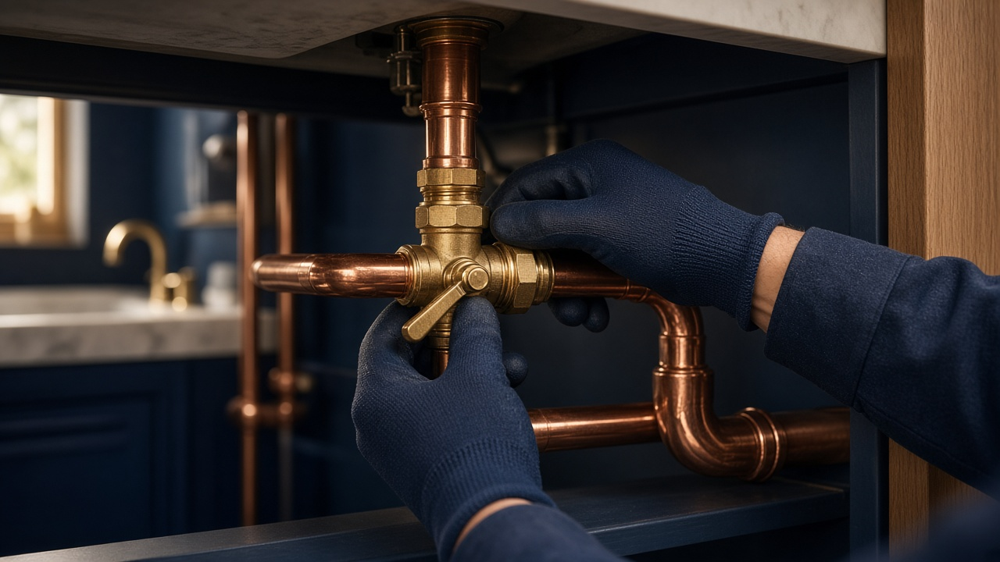
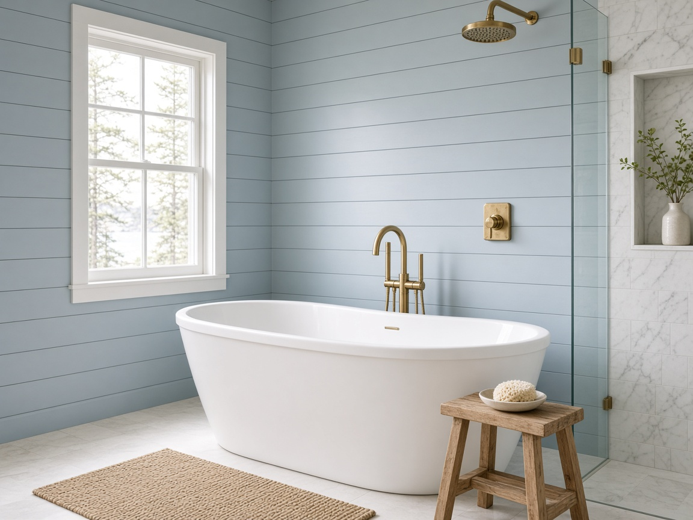
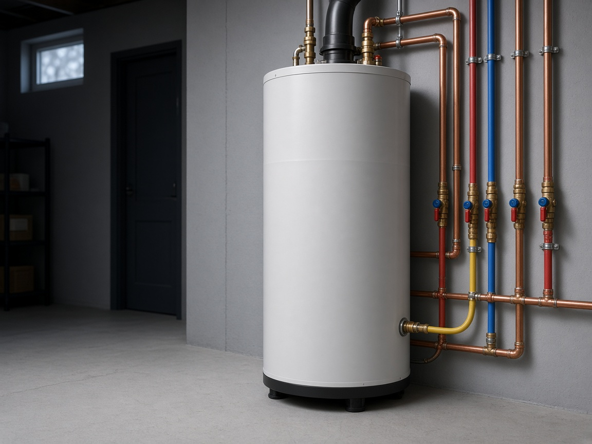

Repairs, remodels, water heaters and new installs for homes and businesses, from a fully insured master plumber who calls you back.

Illustrative photoDrips under the sink, worn-out shower valves, running toilets and pipe repairs.
New faucets, toilets, vanities, tubs and garbage disposals, installed clean.
Water heater installation and replacement, plus a once-over on the one you have.
Sewer main clearing and help with old lines that back up or overflow.
Kitchen and bath remodels, renovations and new installations, start to finish.
When something lets go, call. Emergency service is available.
Services from the business's public listings. Prices aren't published online, so call for a free estimate.

Illustrative photo
Illustrative photoEmergency service is available. Call (207) 590-5837.
Based in Old Orchard Beach and serving homes and businesses across Southern Maine.
Sample reviews for this demo. Your real Google reviews would show here.
“He found a water heater problem I didn't know about while fixing the leak. Honest and fast.”
— Sample review“New tub, faucets and a disposal. Everything looks great and the house was left clean.”
— Sample review“Actually called me back the same day and showed up when he said he would.”
— Sample reviewYes. Emergency service is available. Call (207) 590-5837 and explain what's going on.
Yes, estimates are free. Call to describe the job and set up a time.
Yes. Evan Christensen is a licensed Maine master plumber (license MS90020687), and the business is fully insured.
Christensen Plumbing is based in Old Orchard Beach and serves Southern Maine, for both homes and businesses.
Cash, check, credit card, Venmo and Zelle are accepted.
Prices aren't published online, since every job is different. Call for a free estimate.
Call for a free estimate. Emergency service available.